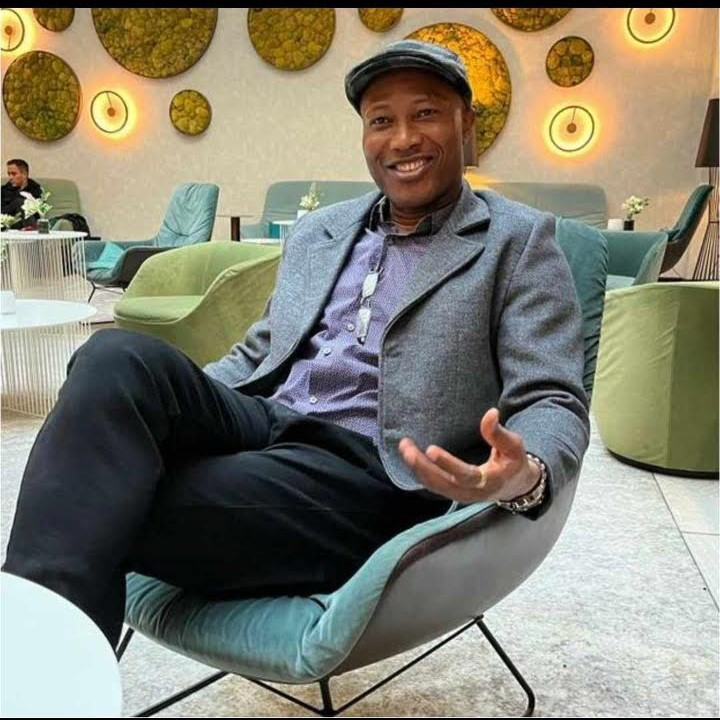
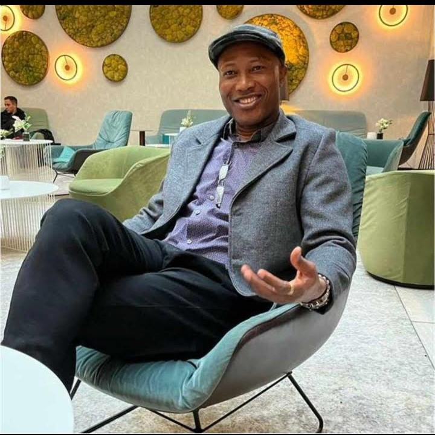

About Rev Fr Anthony Ezekwu
Anthony Ezekwu is dedicated, hardworking and multi-talented. He has a passion for teaching and research. He
is also a social worker and a passionate advocate for the poor. He holds a bachelors degree in both Philosophy
and Theology, and a doctoral degree in Social Ethics from the Johannes Gutenberg University Mainz.
He was the
Deputy Director of the Catholic Institute for Development Justice and Peace (CIDJAP) where he was in-charge of
projects, youths training and personnel management.
Anthony has published several books and written numerous
articles. He is currently conducting a personal research on Mitigation of Climate Change.
He speaks English,
German, Latin, Hausa and Igbo languages fluently.
Gallery

 

Achievements
Ministries & Programs
Youth Empowerment
Mentoring young adults to discover purpose and leadership skills.
Food Relief
Weekly distribution of meals to underprivileged families.
Education Fund
Scholarships and school supplies for students in need.
Testimonials
Contact & Connect
Follow on social media: